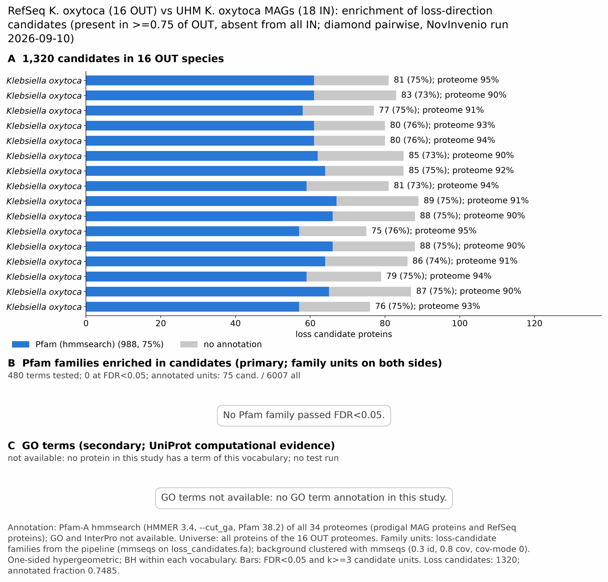

UHM Koxytoca: functional enrichment (loss)
One-sided hypergeometric test per term; Benjamini-Hochberg FDR within each scope, level and vocabulary. Candidates are the loss candidates: gene families present in the OUT group and absent from the IN group. Universe: proteome. Background clustered: True (89506 sequences in 7838 clusters, mmseqs easy-cluster --min-seq-id 0.3 -c 0.8). Family level: one unit per candidate family and per background cluster.
Sources: Pfam: 2026-01-27-Pfam38.2; InterPro entries: 110.0; GO: releases/2026-07-26; analysis generated 2026-10-14T22:00:34. Source tables: studies/bacteria/UHM_Koxytoca/analysis/enrichment/outputs/loss/proteome_clustered.
Full record: PROVENANCE. Run report: report.html.
- Annotation: Pfam-A HMM search (hmmsearch, Pfam gathering thresholds) for every species; no UniProt annotation. Each annotation file has a provenance sidecar (domain table, HMMER version, Pfam release); PROVENANCE.yaml lists the files and their checksums.
- GO: not available for this study (no GO annotation in any species).
- Candidate families (pipeline clustering of candidates) and background clusters (mmseqs clustering of the background proteome) are made by different runs, so family-level counts are not fully comparable.
- Low annotation: the candidate set has less than 50% annotation for InterPro 0.0%, GO 0.0%. Enrichment for these vocabularies has low power.
- GO and InterPro: not available for this study. No species has GO and InterPro annotation (KoxO_050916275, KoxO_017310465, KoxO_929608445, KoxO_040561445, KoxO_900083795, KoxO_024918735, KoxO_902162875, KoxO_053276915, KoxO_030343105, KoxO_030343375, KoxO_016734995, KoxO_030343565, KoxO_900083995, KoxO_004360035, KoxO_030344075, KoxO_051951865), so no GO and InterPro test was run.
Summary figure

Annotation coverage
Fraction of proteins with at least one term per vocabulary. Universe = all proteins of the species; candidates = the candidate set.
| Species | Set | Proteins | Pfam | Pfam clan | InterPro | GO | Any |
|---|---|---|---|---|---|---|---|
| KoxO_050916275 | universe | 5234 | 94.8% | 78.2% | 0.0% | 0.0% | 94.8% |
| KoxO_050916275 | candidates | 81 | 75.3% | 23.5% | 0.0% | 0.0% | 75.3% |
| KoxO_017310465 | universe | 5794 | 89.8% | 73.4% | 0.0% | 0.0% | 89.8% |
| KoxO_017310465 | candidates | 83 | 73.5% | 22.9% | 0.0% | 0.0% | 73.5% |
| KoxO_929608445 | universe | 5789 | 91.5% | 75.1% | 0.0% | 0.0% | 91.5% |
| KoxO_929608445 | candidates | 77 | 75.3% | 23.4% | 0.0% | 0.0% | 75.3% |
| KoxO_040561445 | universe | 5446 | 93.0% | 76.3% | 0.0% | 0.0% | 93.0% |
| KoxO_040561445 | candidates | 80 | 76.2% | 23.8% | 0.0% | 0.0% | 76.2% |
| KoxO_900083795 | universe | 5482 | 93.8% | 77.0% | 0.0% | 0.0% | 93.8% |
| KoxO_900083795 | candidates | 80 | 76.2% | 22.5% | 0.0% | 0.0% | 76.2% |
| KoxO_024918735 | universe | 5886 | 90.3% | 73.6% | 0.0% | 0.0% | 90.3% |
| KoxO_024918735 | candidates | 85 | 72.9% | 23.5% | 0.0% | 0.0% | 72.9% |
| KoxO_902162875 | universe | 5883 | 92.2% | 75.3% | 0.0% | 0.0% | 92.2% |
| KoxO_902162875 | candidates | 85 | 75.3% | 24.7% | 0.0% | 0.0% | 75.3% |
| KoxO_053276915 | universe | 5373 | 93.8% | 77.1% | 0.0% | 0.0% | 93.8% |
| KoxO_053276915 | candidates | 81 | 72.8% | 21.0% | 0.0% | 0.0% | 72.8% |
| KoxO_030343105 | universe | 5974 | 90.5% | 73.5% | 0.0% | 0.0% | 90.5% |
| KoxO_030343105 | candidates | 89 | 75.3% | 23.6% | 0.0% | 0.0% | 75.3% |
| KoxO_030343375 | universe | 5998 | 90.5% | 73.5% | 0.0% | 0.0% | 90.5% |
| KoxO_030343375 | candidates | 88 | 75.0% | 23.9% | 0.0% | 0.0% | 75.0% |
| KoxO_016734995 | universe | 4956 | 95.0% | 78.3% | 0.0% | 0.0% | 95.0% |
| KoxO_016734995 | candidates | 75 | 76.0% | 21.3% | 0.0% | 0.0% | 76.0% |
| KoxO_030343565 | universe | 6048 | 90.4% | 73.4% | 0.0% | 0.0% | 90.4% |
| KoxO_030343565 | candidates | 88 | 75.0% | 23.9% | 0.0% | 0.0% | 75.0% |
| KoxO_900083995 | universe | 5998 | 90.8% | 73.6% | 0.0% | 0.0% | 90.8% |
| KoxO_900083995 | candidates | 86 | 74.4% | 24.4% | 0.0% | 0.0% | 74.4% |
| KoxO_004360035 | universe | 5426 | 94.2% | 77.1% | 0.0% | 0.0% | 94.2% |
| KoxO_004360035 | candidates | 79 | 74.7% | 21.5% | 0.0% | 0.0% | 74.7% |
| KoxO_030344075 | universe | 5994 | 90.5% | 73.5% | 0.0% | 0.0% | 90.5% |
| KoxO_030344075 | candidates | 87 | 74.7% | 23.0% | 0.0% | 0.0% | 74.7% |
| KoxO_051951865 | universe | 5545 | 93.2% | 76.4% | 0.0% | 0.0% | 93.2% |
| KoxO_051951865 | candidates | 76 | 75.0% | 22.4% | 0.0% | 0.0% | 75.0% |
| ALL_OUT | universe | 90826 | 92.0% | 75.2% | 0.0% | 0.0% | 92.0% |
| ALL_OUT | candidates | 1320 | 74.9% | 23.1% | 0.0% | 0.0% | 74.9% |
Tests summary
Per vocabulary: terms with FDR < 0.05 / terms tested. Protein level counts proteins; family level counts candidate families and background clusters.
| Scope | Level | Cand. units | Pfam sig / tested | Pfam clan sig / tested | InterPro sig / tested | GO sig / tested |
|---|---|---|---|---|---|---|
| whole_set | family | 100 | 0 / 480 | 0 / 227 | 0 / 0 (not_available_no_annotated_units) | 0 / 0 (not_available_no_annotated_units) |
| whole_set | protein | 1320 | 80 / 3657 | 19 / 451 | 0 / 0 (not_available_no_annotated_units) | 0 / 0 (not_available_no_annotated_units) |
| KoxO_004360035 | family | 79 | 0 / 326 | 0 / 178 | 0 / 0 (not_available_no_annotated_units) | 0 / 0 (not_available_no_annotated_units) |
| KoxO_004360035 | protein | 79 | 1 / 417 | 0 / 191 | 0 / 0 (not_available_no_annotated_units) | 0 / 0 (not_available_no_annotated_units) |
| KoxO_016734995 | family | 75 | 0 / 288 | 0 / 168 | 0 / 0 (not_available_no_annotated_units) | 0 / 0 (not_available_no_annotated_units) |
| KoxO_016734995 | protein | 75 | 1 / 390 | 0 / 183 | 0 / 0 (not_available_no_annotated_units) | 0 / 0 (not_available_no_annotated_units) |
| KoxO_017310465 | family | 83 | 0 / 311 | 0 / 188 | 0 / 0 (not_available_no_annotated_units) | 0 / 0 (not_available_no_annotated_units) |
| KoxO_017310465 | protein | 83 | 1 / 424 | 0 / 203 | 0 / 0 (not_available_no_annotated_units) | 0 / 0 (not_available_no_annotated_units) |
| KoxO_024918735 | family | 85 | 0 / 313 | 0 / 183 | 0 / 0 (not_available_no_annotated_units) | 0 / 0 (not_available_no_annotated_units) |
| KoxO_024918735 | protein | 85 | 1 / 426 | 0 / 198 | 0 / 0 (not_available_no_annotated_units) | 0 / 0 (not_available_no_annotated_units) |
| KoxO_030343105 | family | 88 | 0 / 320 | 0 / 192 | 0 / 0 (not_available_no_annotated_units) | 0 / 0 (not_available_no_annotated_units) |
| KoxO_030343105 | protein | 89 | 1 / 439 | 0 / 208 | 0 / 0 (not_available_no_annotated_units) | 0 / 0 (not_available_no_annotated_units) |
| KoxO_030343375 | family | 88 | 0 / 323 | 0 / 193 | 0 / 0 (not_available_no_annotated_units) | 0 / 0 (not_available_no_annotated_units) |
| KoxO_030343375 | protein | 88 | 1 / 442 | 0 / 208 | 0 / 0 (not_available_no_annotated_units) | 0 / 0 (not_available_no_annotated_units) |
| KoxO_030343565 | family | 87 | 0 / 325 | 0 / 192 | 0 / 0 (not_available_no_annotated_units) | 0 / 0 (not_available_no_annotated_units) |
| KoxO_030343565 | protein | 88 | 1 / 443 | 0 / 208 | 0 / 0 (not_available_no_annotated_units) | 0 / 0 (not_available_no_annotated_units) |
| KoxO_030344075 | family | 87 | 0 / 321 | 0 / 193 | 0 / 0 (not_available_no_annotated_units) | 0 / 0 (not_available_no_annotated_units) |
| KoxO_030344075 | protein | 87 | 1 / 439 | 0 / 208 | 0 / 0 (not_available_no_annotated_units) | 0 / 0 (not_available_no_annotated_units) |
| KoxO_040561445 | family | 80 | 0 / 308 | 0 / 177 | 0 / 0 (not_available_no_annotated_units) | 0 / 0 (not_available_no_annotated_units) |
| KoxO_040561445 | protein | 80 | 1 / 412 | 0 / 195 | 0 / 0 (not_available_no_annotated_units) | 0 / 0 (not_available_no_annotated_units) |
| KoxO_050916275 | family | 81 | 0 / 308 | 0 / 176 | 0 / 0 (not_available_no_annotated_units) | 0 / 0 (not_available_no_annotated_units) |
| KoxO_050916275 | protein | 81 | 1 / 411 | 0 / 194 | 0 / 0 (not_available_no_annotated_units) | 0 / 0 (not_available_no_annotated_units) |
| KoxO_051951865 | family | 76 | 0 / 322 | 0 / 178 | 0 / 0 (not_available_no_annotated_units) | 0 / 0 (not_available_no_annotated_units) |
| KoxO_051951865 | protein | 76 | 1 / 416 | 0 / 192 | 0 / 0 (not_available_no_annotated_units) | 0 / 0 (not_available_no_annotated_units) |
| KoxO_053276915 | family | 81 | 0 / 313 | 0 / 179 | 0 / 0 (not_available_no_annotated_units) | 0 / 0 (not_available_no_annotated_units) |
| KoxO_053276915 | protein | 81 | 1 / 407 | 0 / 192 | 0 / 0 (not_available_no_annotated_units) | 0 / 0 (not_available_no_annotated_units) |
| KoxO_900083795 | family | 79 | 0 / 322 | 0 / 181 | 0 / 0 (not_available_no_annotated_units) | 0 / 0 (not_available_no_annotated_units) |
| KoxO_900083795 | protein | 80 | 1 / 421 | 0 / 196 | 0 / 0 (not_available_no_annotated_units) | 0 / 0 (not_available_no_annotated_units) |
| KoxO_900083995 | family | 85 | 0 / 324 | 0 / 190 | 0 / 0 (not_available_no_annotated_units) | 0 / 0 (not_available_no_annotated_units) |
| KoxO_900083995 | protein | 86 | 1 / 434 | 0 / 205 | 0 / 0 (not_available_no_annotated_units) | 0 / 0 (not_available_no_annotated_units) |
| KoxO_902162875 | family | 85 | 0 / 325 | 0 / 191 | 0 / 0 (not_available_no_annotated_units) | 0 / 0 (not_available_no_annotated_units) |
| KoxO_902162875 | protein | 85 | 1 / 446 | 0 / 205 | 0 / 0 (not_available_no_annotated_units) | 0 / 0 (not_available_no_annotated_units) |
| KoxO_929608445 | family | 76 | 0 / 326 | 0 / 188 | 0 / 0 (not_available_no_annotated_units) | 0 / 0 (not_available_no_annotated_units) |
| KoxO_929608445 | protein | 77 | 1 / 437 | 0 / 202 | 0 / 0 (not_available_no_annotated_units) | 0 / 0 (not_available_no_annotated_units) |
Top 25 Pfam terms (whole set, family level)
25 rows shown, ordered by FDR then p-value; 0 have FDR < 0.05 (bold).
| Term | Name | k / N cand. | n / M bg | Fold | FDR (BH) |
|---|---|---|---|---|---|
| PF04860 | Phage_portal: Phage portal protein | 3 / 75 | 11 / 6007 | 21.844 | 0.138 |
| PF03354 | TerL_ATPase: Terminase large subunit, ATPase domain | 2 / 75 | 5 / 6007 | 32.037 | 0.298 |
| PF20441 | TerL_nuclease: Terminase large subunit, endonuclease domain | 2 / 75 | 6 / 6007 | 26.698 | 0.298 |
| PF05119 | Terminase_4: Phage terminase, small subunit | 2 / 75 | 7 / 6007 | 22.884 | 0.298 |
| PF16083 | Phage_holin_3_3: LydA holin phage, holin superfamily III | 2 / 75 | 7 / 6007 | 22.884 | 0.298 |
| PF20155 | TMP_3: Tape measure protein | 1 / 75 | 5 / 6007 | 16.019 | 1.000 |
| PF09718 | Tape_meas_lam_C: Lambda phage tail tape-measure protein (Tape_meas_lam_C) | 1 / 75 | 6 / 6007 | 13.349 | 1.000 |
| PF11745 | DUF3304: Protein of unknown function (DUF3304) | 1 / 75 | 7 / 6007 | 11.442 | 1.000 |
| PF00004 | AAA: ATPase family associated with various cellular activities (AAA) | 0 / 75 | 24 / 6007 | 0.0 | 1.000 |
| PF00005 | ABC_tran: ABC transporter | 0 / 75 | 52 / 6007 | 0.0 | 1.000 |
| PF00009 | GTP_EFTU: Elongation factor Tu GTP binding domain | 0 / 75 | 16 / 6007 | 0.0 | 1.000 |
| PF00012 | HSP70: Hsp70 protein | 0 / 75 | 5 / 6007 | 0.0 | 1.000 |
| PF00027 | cNMP_binding: Cyclic nucleotide-binding domain | 0 / 75 | 6 / 6007 | 0.0 | 1.000 |
| PF00037 | Fer4: 4Fe-4S binding domain | 0 / 75 | 11 / 6007 | 0.0 | 1.000 |
| PF00043 | GST_C: Glutathione S-transferase, C-terminal domain | 0 / 75 | 9 / 6007 | 0.0 | 1.000 |
| PF00070 | Pyr_redox: Pyridine nucleotide-disulphide oxidoreductase | 0 / 75 | 16 / 6007 | 0.0 | 1.000 |
| PF00072 | Response_reg: Response regulator receiver domain | 0 / 75 | 17 / 6007 | 0.0 | 1.000 |
| PF00078 | RVT_1: Reverse transcriptase (RNA-dependent DNA polymerase) | 0 / 75 | 5 / 6007 | 0.0 | 1.000 |
| PF00083 | Sugar_tr: Sugar (and other) transporter | 0 / 75 | 35 / 6007 | 0.0 | 1.000 |
| PF00085 | Thioredoxin: Thioredoxin | 0 / 75 | 7 / 6007 | 0.0 | 1.000 |
| PF00089 | Trypsin: Trypsin | 0 / 75 | 5 / 6007 | 0.0 | 1.000 |
| PF00092 | VWA: von Willebrand factor type A domain | 0 / 75 | 5 / 6007 | 0.0 | 1.000 |
| PF00106 | adh_short: short chain dehydrogenase | 0 / 75 | 19 / 6007 | 0.0 | 1.000 |
| PF00107 | ADH_zinc_N: Zinc-binding dehydrogenase | 0 / 75 | 12 / 6007 | 0.0 | 1.000 |
| PF00108 | Thiolase_N: Thiolase, N-terminal domain | 0 / 75 | 5 / 6007 | 0.0 | 1.000 |
Top 25 InterPro terms (whole set, family level)
Not available: no protein of the candidate source group has a InterPro annotation in this study (for example Pfam-only HMM annotation). No InterPro test was run.
Top 15 GO terms (whole set, family level) — secondary, computational evidence (IEA/IBA) included
Not available: no protein of the candidate source group has a GO annotation in this study (for example Pfam-only HMM annotation). No GO test was run.
Actin cytoskeleton controls
Known actin-related families and how many of their proteins pass each filter. Protein ID columns are left out.
| control | pfam_ids | desc_regex | OUT_universe | OUT_in_matrix | OUT_pass_outgroup_rule | candidates | near_miss_in1 | near_miss_in2 | n_KoxO_050916275 | n_KoxO_017310465 | n_KoxO_929608445 | n_KoxO_040561445 | n_KoxO_900083795 | n_KoxO_024918735 | n_KoxO_902162875 | n_KoxO_053276915 | n_KoxO_030343105 | n_KoxO_030343375 | n_KoxO_016734995 | n_KoxO_030343565 | n_KoxO_900083995 | n_KoxO_004360035 | n_KoxO_030344075 | n_KoxO_051951865 | n_UHM102bin47 | n_UHM125bin22 | n_UHM125bin48 | n_UHM145bin17 | n_UHM145bin33 | n_UHM145bin28 | n_UHM17bin35 | n_UHM18bin40 | n_UHM20bin40 | n_UHM20bin12 | n_UHM22bin50 | n_UHM22bin54 | n_UHM22bin8 | n_UHM40bin4 | n_UHM40bin27 | n_UHM43bin53 | n_UHM56bin19 | n_UHM72bin19 |
|---|---|---|---|---|---|---|---|---|---|---|---|---|---|---|---|---|---|---|---|---|---|---|---|---|---|---|---|---|---|---|---|---|---|---|---|---|---|---|---|---|---|---|
| Arp2/3 ARPC2 (P34-Arc) | PF04045 | 0 | 0 | 0 | 0 | 0 | 0 | 0 | 0 | 0 | 0 | 0 | 0 | 0 | 0 | 0 | 0 | 0 | 0 | 0 | 0 | 0 | 0 | 0 | 0 | 0 | 0 | 0 | 0 | 0 | 0 | 0 | 0 | 0 | 0 | 0 | 0 | 0 | 0 | 0 | 0 | |
| Arp2/3 ARPC3 (P21-Arc) | PF04062 | 0 | 0 | 0 | 0 | 0 | 0 | 0 | 0 | 0 | 0 | 0 | 0 | 0 | 0 | 0 | 0 | 0 | 0 | 0 | 0 | 0 | 0 | 0 | 0 | 0 | 0 | 0 | 0 | 0 | 0 | 0 | 0 | 0 | 0 | 0 | 0 | 0 | 0 | 0 | 0 | |
| Arp2/3 ARPC4 | PF05856 | 0 | 0 | 0 | 0 | 0 | 0 | 0 | 0 | 0 | 0 | 0 | 0 | 0 | 0 | 0 | 0 | 0 | 0 | 0 | 0 | 0 | 0 | 0 | 0 | 0 | 0 | 0 | 0 | 0 | 0 | 0 | 0 | 0 | 0 | 0 | 0 | 0 | 0 | 0 | 0 | |
| Arp2/3 ARPC5 (P16-Arc) | PF04699 | 0 | 0 | 0 | 0 | 0 | 0 | 0 | 0 | 0 | 0 | 0 | 0 | 0 | 0 | 0 | 0 | 0 | 0 | 0 | 0 | 0 | 0 | 0 | 0 | 0 | 0 | 0 | 0 | 0 | 0 | 0 | 0 | 0 | 0 | 0 | 0 | 0 | 0 | 0 | 0 | |
| Arp2/3 ARPC1 (description only) | arp2/3 complex.*(41|p41|subunit 1)|ARPC1 | 0 | 0 | 0 | 0 | 0 | 0 | 0 | 0 | 0 | 0 | 0 | 0 | 0 | 0 | 0 | 0 | 0 | 0 | 0 | 0 | 0 | 0 | 0 | 0 | 0 | 0 | 0 | 0 | 0 | 0 | 0 | 0 | 0 | 0 | 0 | 0 | 0 | 0 | 0 | 0 | |
| Arp2 / Arp3 (description only) | actin-related protein (2|3)\b|\bARP[23]\b | 0 | 0 | 0 | 0 | 0 | 0 | 0 | 0 | 0 | 0 | 0 | 0 | 0 | 0 | 0 | 0 | 0 | 0 | 0 | 0 | 0 | 0 | 0 | 0 | 0 | 0 | 0 | 0 | 0 | 0 | 0 | 0 | 0 | 0 | 0 | 0 | 0 | 0 | 0 | 0 | |
| WAVE complex NCKAP1 | PF09735 | 0 | 0 | 0 | 0 | 0 | 0 | 0 | 0 | 0 | 0 | 0 | 0 | 0 | 0 | 0 | 0 | 0 | 0 | 0 | 0 | 0 | 0 | 0 | 0 | 0 | 0 | 0 | 0 | 0 | 0 | 0 | 0 | 0 | 0 | 0 | 0 | 0 | 0 | 0 | 0 | |
| WAVE complex CYFIP (FragX_IP) | PF05994 | 0 | 0 | 0 | 0 | 0 | 0 | 0 | 0 | 0 | 0 | 0 | 0 | 0 | 0 | 0 | 0 | 0 | 0 | 0 | 0 | 0 | 0 | 0 | 0 | 0 | 0 | 0 | 0 | 0 | 0 | 0 | 0 | 0 | 0 | 0 | 0 | 0 | 0 | 0 | 0 | |
| WAVE complex ABI | PF07815|PF27594 | 0 | 0 | 0 | 0 | 0 | 0 | 0 | 0 | 0 | 0 | 0 | 0 | 0 | 0 | 0 | 0 | 0 | 0 | 0 | 0 | 0 | 0 | 0 | 0 | 0 | 0 | 0 | 0 | 0 | 0 | 0 | 0 | 0 | 0 | 0 | 0 | 0 | 0 | 0 | 0 | |
| SCAR/WAVE (SCAR_helical) | PF27569 | 0 | 0 | 0 | 0 | 0 | 0 | 0 | 0 | 0 | 0 | 0 | 0 | 0 | 0 | 0 | 0 | 0 | 0 | 0 | 0 | 0 | 0 | 0 | 0 | 0 | 0 | 0 | 0 | 0 | 0 | 0 | 0 | 0 | 0 | 0 | 0 | 0 | 0 | 0 | 0 | |
| WASP family (WH1) | PF00568 | 0 | 0 | 0 | 0 | 0 | 0 | 0 | 0 | 0 | 0 | 0 | 0 | 0 | 0 | 0 | 0 | 0 | 0 | 0 | 0 | 0 | 0 | 0 | 0 | 0 | 0 | 0 | 0 | 0 | 0 | 0 | 0 | 0 | 0 | 0 | 0 | 0 | 0 | 0 | 0 | |
| WH2 motif (WASP, WAVE, others) | PF02205 | 0 | 0 | 0 | 0 | 0 | 0 | 0 | 0 | 0 | 0 | 0 | 0 | 0 | 0 | 0 | 0 | 0 | 0 | 0 | 0 | 0 | 0 | 0 | 0 | 0 | 0 | 0 | 0 | 0 | 0 | 0 | 0 | 0 | 0 | 0 | 0 | 0 | 0 | 0 | 0 | |
| Formin FH2 | PF02181 | 0 | 0 | 0 | 0 | 0 | 0 | 0 | 0 | 0 | 0 | 0 | 0 | 0 | 0 | 0 | 0 | 0 | 0 | 0 | 0 | 0 | 0 | 0 | 0 | 0 | 0 | 0 | 0 | 0 | 0 | 0 | 0 | 0 | 0 | 0 | 0 | 0 | 0 | 0 | 0 | |
| Formin Drf_GBD / Drf_FH3 / Drf_DAD | PF06371|PF06367|PF06345 | 0 | 0 | 0 | 0 | 0 | 0 | 0 | 0 | 0 | 0 | 0 | 0 | 0 | 0 | 0 | 0 | 0 | 0 | 0 | 0 | 0 | 0 | 0 | 0 | 0 | 0 | 0 | 0 | 0 | 0 | 0 | 0 | 0 | 0 | 0 | 0 | 0 | 0 | 0 | 0 | |
| Ena/VASP (VASP_tetra) | PF08776 | 0 | 0 | 0 | 0 | 0 | 0 | 0 | 0 | 0 | 0 | 0 | 0 | 0 | 0 | 0 | 0 | 0 | 0 | 0 | 0 | 0 | 0 | 0 | 0 | 0 | 0 | 0 | 0 | 0 | 0 | 0 | 0 | 0 | 0 | 0 | 0 | 0 | 0 | 0 | 0 | |
| Coronin (description only) | coronin | 0 | 0 | 0 | 0 | 0 | 0 | 0 | 0 | 0 | 0 | 0 | 0 | 0 | 0 | 0 | 0 | 0 | 0 | 0 | 0 | 0 | 0 | 0 | 0 | 0 | 0 | 0 | 0 | 0 | 0 | 0 | 0 | 0 | 0 | 0 | 0 | 0 | 0 | 0 | 0 | |
| Cortactin (HS1_rep) | PF02218 | 0 | 0 | 0 | 0 | 0 | 0 | 0 | 0 | 0 | 0 | 0 | 0 | 0 | 0 | 0 | 0 | 0 | 0 | 0 | 0 | 0 | 0 | 0 | 0 | 0 | 0 | 0 | 0 | 0 | 0 | 0 | 0 | 0 | 0 | 0 | 0 | 0 | 0 | 0 | 0 | |
| Myosin 2 tail (Myosin_tail_1) | PF01576 | 0 | 0 | 0 | 0 | 0 | 0 | 0 | 0 | 0 | 0 | 0 | 0 | 0 | 0 | 0 | 0 | 0 | 0 | 0 | 0 | 0 | 0 | 0 | 0 | 0 | 0 | 0 | 0 | 0 | 0 | 0 | 0 | 0 | 0 | 0 | 0 | 0 | 0 | 0 | 0 | |
| Myosin head (all myosins) | PF00063 | 0 | 0 | 0 | 0 | 0 | 0 | 0 | 0 | 0 | 0 | 0 | 0 | 0 | 0 | 0 | 0 | 0 | 0 | 0 | 0 | 0 | 0 | 0 | 0 | 0 | 0 | 0 | 0 | 0 | 0 | 0 | 0 | 0 | 0 | 0 | 0 | 0 | 0 | 0 | 0 |
Page written by bin/generate_enrichment_page.py.